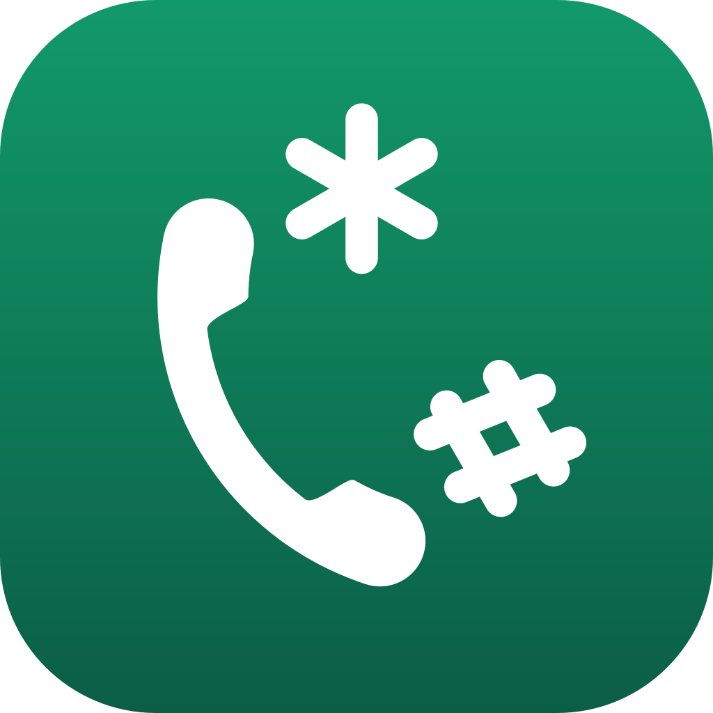

Politique de confidentialité de All USSD
EnglishDernière mise à jour : 21 octobre 2026
All USSD est une application mobile qui rassemble les codes USSD/MMI et les codes opérateurs par pays, avec composition en un tap. Cette page décrit comment vos données sont traitées.
Ce que l'application ne fait pas
- Aucun compte utilisateur, aucune inscription
- Aucune connexion internet requise pour fonctionner
- Aucune donnée personnelle collectée, transmise ou revendue
- Composer un code ouvre l'application Téléphone du système avec le numéro prérempli : c'est vous qui appuyez sur Appeler
- Une ligne WhatsApp d'un opérateur ou d'un service (bouton « Ouvrir WhatsApp ») ouvre la conversation avec ce numéro dans WhatsApp, ou sur la page web de WhatsApp si l'application n'est pas installée. Un premier mot est parfois déjà écrit, par exemple « Bonjour » : c'est vous qui l'envoyez. All USSD ne passe à WhatsApp que ce numéro et ce mot, et ne voit rien de la conversation
Données stockées sur votre appareil
Vos réglages et vos choix dans l'application (favoris, préférences, codes que vous ajoutez vous-même) restent sur votre téléphone.
Si vous le demandez, l'application garde aussi un numéro de téléphone, celui que vous composez le plus souvent, pour le remplir en un tap dans les codes qui en attendent un. Il est enregistré uniquement quand vous appuyez sur « Enregistrer ce numéro », il ne quitte jamais votre appareil, et vous le voyez, le modifiez ou le supprimez dans les Réglages de l'application. Un code secret n'est jamais enregistré, ni ici ni ailleurs : vous le saisissez à chaque fois.
Envoi volontaire (signalement, confirmation ou proposition de code)
Si vous utilisez un bouton « Signaler » (sur un code ou sur un numéro d'urgence), « Ce code marche », ou si vous proposez un code que vous avez ajouté, vous choisissez vous-même comment l'envoyer : par e-mail, ou en ouvrant un formulaire sur GitHub. Ne partent que les informations affichées à l'écran (pays, opérateur, nom et code pour un code ; pays, service et numéro pour un numéro d'urgence) et ce que vous décrivez du problème. Cet envoi est volontaire et déclenché par vous à chaque fois ; l'application ne transmet jamais rien automatiquement.
Un signalement ouvert sur GitHub est public et le reste. L'autre choix ne l'est pas.
Partage et avis
Les boutons de partage (l'application, ou un code depuis sa fiche) ouvrent la feuille de partage de votre téléphone avec un message prérempli et le lien de l'application sur Google Play. Vous choisissez l'application et le destinataire : All USSD n'envoie rien elle-même et ne sait pas ce que vous avez partagé. Pour un code, partent son nom, son opérateur, son pays et son modèle de code, jamais les valeurs que vous avez saisies (numéro, montant, code secret).
Après quelques utilisations, l'application peut vous proposer de donner votre avis sur Google Play, grâce à l'interface d'avis de Google. Cette fenêtre est gérée par Google Play, selon sa propre politique : All USSD n'en reçoit ni votre note ni votre texte. Pour choisir le moment, elle garde sur votre appareil un nombre de compositions et quelques dates, sans aucun code. Cela ne quitte jamais votre appareil.
Partage avec des tiers
Nous ne partageons aucune donnée avec des tiers, puisque nous n'en collectons aucune.
Vos droits
Toutes les données de l'application vivent sur votre appareil : vous pouvez les consulter directement dans l'application et les supprimer depuis ses réglages.
Modifications de cette politique
Cette politique évolue avec l'application. La date en haut de page indique la version en vigueur.
Contact
Pour toute question sur cette politique : levraidev@gmail.com